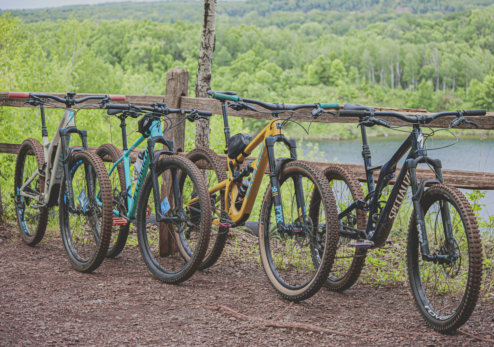

Trails, bike parks, and weekend adventures — for all levels, no experience necessary.
Flexible group rides at local trails around London. Beginner-friendly and relaxed — just show up, have fun, get muddy. Dates announced via the group chat and mailing list.
Organised trips to UK bike parks and trail centres throughout the year. A great chance to push your skills in a new environment and explore further afield with the group.
Some members race in BUCS MTB and local events. Everyone is welcome to join — whether you're racing or coming along to spectate and soak up the atmosphere.
You don't need top-of-the-range kit to ride with us. Here's what matters.
Every experienced rider in the club started somewhere. Our weekend trail rides are genuinely beginner-friendly — we ride together, not apart, and nobody gets left behind.
Experienced members are always happy to share tips on technique, trails, and kit. You'll pick up the basics quickly on the bike — the best way to learn is to come out and ride.
We're also looking into making a club hardtail available for hire in the future — if you're curious but don't have a bike yet, get in touch and we'll figure something out.
Join the club to get started30 minutes from central London by tube. Good trails for beginners and intermediates, with plenty of natural features and forest singletrack.
A dedicated trail centre near Bracknell with graded trails from green to black. One of the best spots within easy reach of London.
Natural trails across the North Downs. More demanding than Epping, with technical descents and open ridge riding. Great for a longer day out.
Join ICCC through the Imperial College Union and get access to every ride, trip, and race event we run.